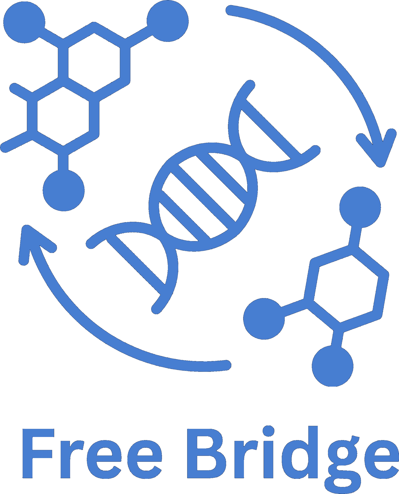
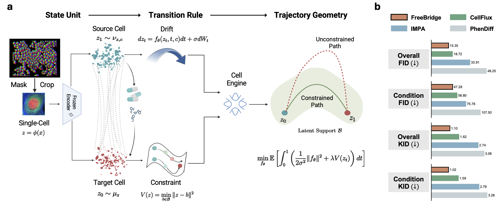
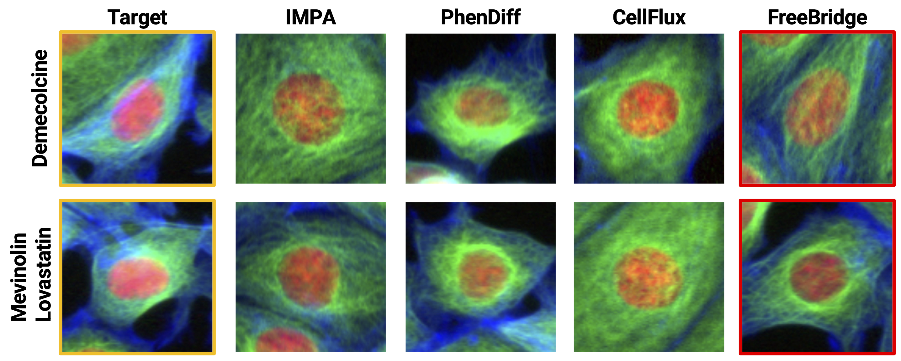
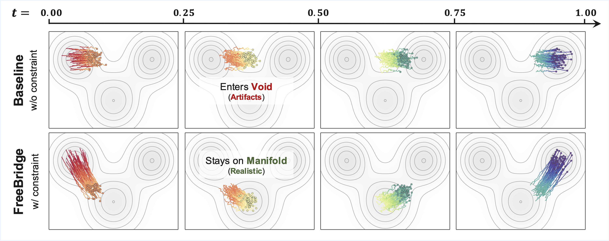
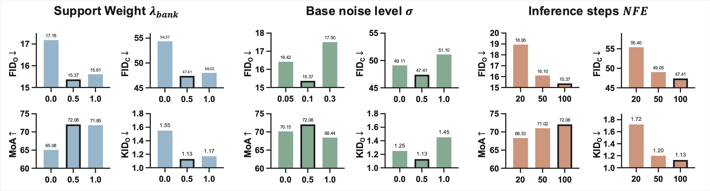

Modeling single-cell perturbation response as endpoint-only Schrödinger Bridge transport, constrained to the manifold of real cell morphologies.
Modeling how cells respond to perturbations is central to phenotypic drug discovery — yet high-content imaging fixes cells at acquisition, so a single cell's trajectory is never observed, only control and perturbed populations as separate marginals.
Matching endpoints alone leaves the interior undetermined: many stochastic processes share the same control and perturbed marginals while passing through morphologies that never occur in real cells.
FreeBridge is a Schrödinger Bridge for single-cell transition modeling under endpoint-only supervision — stochastic transport regularized to stay on the manifold of real single-cell morphologies.
Keywords: High-Content Imaging · Cellular Morphology Modeling · Schrödinger Bridges · Perturbation Dynamics
FreeBridge casts endpoint-only supervision as a variational Schrödinger Bridge: among all stochastic processes matching the observed control and perturbed marginals, it seeks the one of minimal control energy whose intermediate states stay on the empirical morphology manifold, trading transport energy against a latent-support penalty $V(z_t)$:
The model is realized as a Cell Engine that separates state specification from stochastic transport. Microscopy fields are instance-segmented into single-cell crops, and a frozen encoder embeds each crop as $z=\phi(x)$; the collection of embeddings forms an empirical latent support set $\mathcal{B}$ that pins down the manifold of real morphologies. Transport is a time-conditioned drift driving the SDE $dz_t = f_{\theta}(z_t,t,c)\,dt + \sigma\,dW_t$ from control cells $z_0\sim\nu_{z,c}$ at $t=0$ to perturbed cells $z_1\sim\mu_z$ at $t=1$. The drift is trained variationally to minimize control energy while the support cost $V(z)=\min_{b\in\mathcal{B}}\|z-b\|^{2}$ penalizes excursions off the manifold; the weight $\lambda_{\text{bank}}$ trades transport energy against support feasibility. Intra-batch pairing within each plate supplies the coupling, and instance segmentation ensures the bridge operates on single cells rather than whole fields.

GANs map noise directly to data and train unstably; diffusion models discretize generation into many denoising steps; both match the perturbed endpoint but say nothing about the path taken to reach it. A Schrödinger Bridge instead selects the minimal-energy stochastic process between two given marginals — exactly the control-to-perturbed setting. Adding the empirical support cost ties that process to observed morphology, so intermediate states remain biologically plausible rather than drifting through regions of latent space that no real cell occupies.
FreeBridge is evaluated on three high-content imaging benchmarks under a single unified single-cell protocol.
| Benchmark | Source | Assay | Perturbations |
|---|---|---|---|
| BBBC021 | Broad BBBC | MCF-7 breast-cancer cells, 3-channel imaging | 38 compounds, 12 mechanism-of-action classes |
| RxRx1 | Recursion | Fluorescent cells across batches / cell types | 1,108 siRNA genetic knockdowns |
| JUMP | JUMP-CP Consortium | Cell Painting, multi-channel morphology | Large-scale chemical & genetic perturbations |
We evaluate FreeBridge on BBBC021, RxRx1, and JUMP under a unified protocol.
FreeBridge improves overall and condition-level FID and KID over PhenDiff, IMPA, and CellFlux across all three benchmarks, and cuts the support-violation rate on BBBC021 by roughly 3×.
| BBBC021 | RxRx1 | JUMP | |||||||||||
|---|---|---|---|---|---|---|---|---|---|---|---|---|---|
| Method | FIDo↓ | FIDc↓ | KIDo↓ | KIDc↓ | Rviol↓ | FIDo↓ | FIDc↓ | KIDo↓ | KIDc↓ | FIDo↓ | FIDc↓ | KIDo↓ | KIDc↓ |
| PhenDiff | 48.25 | 107.50 | 3.08 | 3.26 | 0.38 | 67.12 | 175.62 | 5.28 | 5.34 | 48.57 | 126.52 | 5.13 | 5.23 |
| IMPA | 33.91 | 75.76 | 2.74 | 2.79 | 0.34 | 39.94 | 163.91 | 2.89 | 2.87 | 14.81 | 101.03 | 1.10 | 1.00 |
| CellFlux | 18.72 | 56.80 | 1.62 | 1.59 | 0.31 | 33.00 | 162.85 | 2.40 | 2.41 | 9.00 | 83.21 | 0.65 | 0.67 |
| FreeBridge (Ours) | 15.35 | 47.28 | 1.10 | 1.02 | 0.11 | 28.94 | 147.33 | 1.98 | 2.03 | 8.51 | 79.05 | 0.59 | 0.53 |
5k generated samples per condition, averaged over three seeds. Rviol (Support Violation Rate): fraction of intermediate states outside the empirical morphology support — a support-feasibility measure, not verified temporal ordering.
We compare endpoint morphology on BBBC021 against IMPA, PhenDiff, and CellFlux for two perturbations with distinct phenotypes.

Endpoint alignment leaves the interior underdetermined. We visualize trajectories across $t = 0 \to 1$ and sweep the support weight $\lambda_{\text{bank}}$.

1. Endpoints align regardless. Both constrained and unconstrained drifts reproduce the control and perturbed marginals.
2. Unconstrained drifts off-manifold. Without the support cost, intermediate samples traverse low-support regions and produce artifacts.
3. Support cost pulls trajectories back. Raising $\lambda_{\text{bank}}$ lowers feasibility energy and violation rate together.
| Variant | Efeas↓ | Rviol↓ |
|---|---|---|
| $\lambda_{\text{bank}}=0$ (≡ CellFlux) | 2.48 | 0.31 |
| $\lambda_{\text{bank}}=0.3$ | 1.85 | 0.19 |
| $\lambda_{\text{bank}}=0.5$ | 1.32 | 0.11 |
Setting $\lambda_{\text{bank}}=0$ removes the support cost and recovers the CellFlux baseline — matching its Rviol of 0.31 in the main table.
We ablate the three ingredients of the Cell Engine, reporting endpoint fidelity and mechanism-of-action retention.
| Variant | FIDo↓ | MoA%↑ | KIDo↓ |
|---|---|---|---|
| w/o intra-batch pairing | 19.94 | 63.27 | 1.81 |
| w/o support cost $V(\cdot)$ | 17.18 | 65.08 | 1.55 |
| w/o instance segmentation | 28.54 | 51.34 | 2.45 |
| Full model | 15.37 | 72.08 | 1.13 |
1. Instance segmentation matters most. Removing it collapses MoA to 51% and nearly doubles FID — single-cell geometry is essential.
2. Support cost lifts mechanism retention. Dropping $V(\cdot)$ costs ~7 MoA points and raises feasibility violations.
3. Intra-batch pairing. Removing the coupling degrades FID from 15.37 to 19.94.
Full-model numbers are from an independent ablation run and differ marginally from the main table.
We sweep support weight $\lambda_{\text{bank}}$, base noise $\sigma$, and inference steps (NFE) on BBBC021.

The single-cell pipeline runs control/perturbed endpoints through a frozen latent encoder, then trains the bridge with Hydra experiment profiles.
# PyTorch-Lightning 1.x required (pinned to 1.8.5.post0) — 2.x is not supported
conda env create -f environment.yml
conda activate freebridge
pip install -e .# crop single cells → train VAE → export latents → build endpoints
python data_prep/crop_bbbc021_singlecell.py --mask_root <masks>
python data_prep/train_vae_full.py
python data_prep/export_latents_from_vae.py
python data_prep/build_bbbc021_endpoints.py \
--control_regex DMSO --target_regex taxol \
--out_dir data/bbbc021# default FreeBridge, support weight lambda_bank = 0.5
python train.py experiment=bbbc021
# support-weight sweep
python train.py experiment=bbbc021 state_cost.support_weight=0.0
python train.py experiment=bbbc021 state_cost.support_weight=1.0Epoch 0 uses a straight-line warm start; manifold-constrained paths activate from epoch 1, so set max_epochs ≥ 2. Full setup and configs are in the GitHub repository.
@article{wang2026freebridge,
title={FreeBridge: Variational Schr{\"o}dinger Bridges for Cellular Transition Dynamics},
author={Wang, Xurui and Ren, Qin and Ma, Jun and Ling, Haibin and You, Chenyu},
journal={arXiv preprint arXiv:2606.11286},
year={2026},
}Built on GSBM (Liu et al., ICLR 2024); the single-cell task and unified evaluation protocol follow CellFlux (Zhang et al., 2025). We thank the authors for releasing their code.